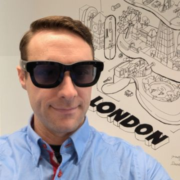

Why I run a game jam about AI
I've spent my career at the point where games, new hardware and new tools meet: shipping a VR game on a brand-new headset, prototyping experiences for AR glasses that hadn't been released yet, and now building products where AI does a lot of the heavy lifting.
Jamference is the jam I wanted to enter. Everyone gets the same theme and restriction, everyone is allowed (and expected) to use AI, and everyone shows their work. I make a game for every jam too, so I'm in the trenches with you.
Games & XR
My history in the games industry
-
Weekends & jams
Still making games
Jams keep me shipping. Recent ones include Hexagon Tactics, where AI creates characters, enemies, names and art in real time; Island Builder, an AI-assisted card roguelite; Severed Heads, United Hearts, where you persuade AI agents to back you over your rival; and Deep Boid Sea, a shader and flocking toy. At Jamference #1, my tower defence game Kitty Kingdom was rated the most fun entry.
-
Meta · Meta Connect demo
Object locking AI
With a team of six over three months, I led prototyping for a system that recognises real objects, works out where they are in 3D, pins stable markers to them, and feeds what it sees to an LLM (for example, suggesting a recipe from the ingredients on the counter). It became part of a live demo at Meta Connect.
3 monthsTeam of 6 -
Meta · Reality Labs
Senior product design prototyper, Orion AR glasses
Two years prototyping on Orion, Meta's internal see-through AR glasses with eye, hand and touch input. I led prototyping for messaging (Messenger and WhatsApp), building every exploratory prototype in Unity, running studies, and pushing to test directly on the glasses rather than on stand-in VR headsets. The work explored AI summaries, prioritisation and notifications that know what you're doing, so messages don't swamp you while you walk around the real world.
-
Meta · Reality Labs
Colocation systems for Quest
Early work on letting headsets know where each other are, so several people can share the same physical and virtual space. I designed and built the safety systems and ran the safety testing for colocated headsets.
-
Coinflip Studios
Lead developer & designer, Ninja Legends
I led the team behind Ninja Legends, a fast melee VR game and one of the first six-degrees-of-freedom titles released after the original Oculus Quest launched. I spotted that most existing VR games wouldn't port to the new standalone headset, steered the team toward a game that would run on that class of hardware, and worked my contacts to get it in front of the Quest teams early.
Being early in a near-empty store paid off. The game was built in only a few months and went on to release on Quest, Rift, Steam and PlayStation VR.
Over $1.2M in revenueEarly Quest title -
Rocket Games
Lead systems designer, Viva Slots
Rocket Games became a leader in social casino with Viva Slots, the most popular classic slots game, and was acquired by Penn National Gaming in 2016. I defined product and design for new business segments, launched new products and product lines, and designed retention and monetisation systems tested with A/B and multi-armed bandit experiments. I also ran marketing and growth for the game portfolio on a $1M yearly budget.
Acquired by Penn National Gaming$1M yearly marketing budget -
Zynga
Product manager, Pioneer Trail & Storyville
My start in games. I was a product manager on Pioneer Trail, then a senior product manager in the Storyville division, handling feature design, product management and analysis for one of Zynga's top-grossing games, and managing release strategies for new apps.
Top-grossing game
AI
My work in AI
These days I'm CEO of Story Machine AI, leading a small team and building AI products with AI development tools. Some of what I've made:
-
AI product
Story Machine AI
An AI filmmaking platform that takes you from an idea to a finished short film: story structure, consistent characters, shots, video, voice and lipsync. I architected it, built the MVP in about a month, then hired two developers and a marketer.
-
AI product
Play Machine
Describe. Play. Ship. A tool that turns natural-language prompts into playable games.
-
AI product
Another Like That
A recommendation engine for London activities and events, designed and launched in three weeks.
-
AI product
Lifted News
A daily news site that surfaces uplifting, hopeful stories from around the world.
-
AI film
AI short films
Early experiments in AI filmmaking, including The Sea's Keeper (LoRA training, IPAdapter and vid2vid for consistent characters), Speakeasy Revenge and Lost Connection.
-
Community
Big Screen Hack
I help host this AI film hackathon in London, where the winning films are screened on an IMAX screen.
-
Writing
Once Upon an Algorithm
A 2022 blog on writing with AI, under a pen name. In 2023 I also illustrated and published a version of Alice's Adventures in Wonderland.